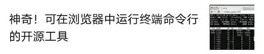

事实上，你只需要会 Python 代码就可以了，剩下的工作都可以交给一个工具。近日，Streamlit 联合创始人 Adrien Treuille 撰文介绍其开发的机器学习工具开发框架——Streamlit，这是一款专为机器学习工程师创建的免费、开源 app 构建框架。这款工具可以在你写 Python 代码的时候，实时更新你的应用。目前，Streamlit 的 GitHub Star 量已经超过 1.5 万，在 medium 上的热度更是达到了 9000+。
Streamlit 网站：https://streamlit.io/GitHub地址：https://github.com/streamlit/streamlit/用 300 行 Python 代码，编程一个可实时执行神经网络推断的语义搜索引擎。以我的经验，每一个不平凡的机器学习项目都是用错误百出、难以维护的内部工具整合而成的。这些工具通常用 Jupyter Notebooks 和 Flask app 写成，很难部署，需要对客户端服务器架构（C/S 架构）进行推理，且无法与 Tensorflow GPU 会话等机器学习组件进行很好的整合。我第一次看到此类工具是在卡内基梅隆大学，之后又在伯克利、Google X、Zoox 看到。这些工具最初只是小的 Jupyter notebook：传感器校准工具、仿真对比 app、激光雷达对齐 app、场景重现工具等。当一个工具越来越重要时，项目经理会介入其中：进程和需求不断增加。这些单独的项目变成代码脚本，并逐渐发展成为冗长的「维护噩梦」……机器学习工程师创建 app 的流程（ad-hoc）。而当一个工具非常关键时，我们会组建工具团队。他们熟练地写 Vue 和 React，在笔记本电脑上贴满声明式框架的贴纸。他们的设计流程是这样式的：工具团队构建 app 的流程（干净整洁，从零开始）。这简直太棒了！但是所有这些工具都需要新功能，比如每周上线新功能。然而工具团队可能同时支持 10 多个项目，他们会说：「我们会在两个月内更新您的工具。」我们返回之前自行构建工具的流程：部署 Flask app，写 HTML、CSS 和 JavaScript，尝试对从 notebook 到样式表的所有一些进行版本控制。我和在 Google X 工作的朋友 Thiago Teixeira 开始思考：如果构建工具像写 Python 脚本一样简单呢？我们希望在没有工具团队的情况下，机器学习工程师也能构建不错的 app。这些内部工具应该像机器学习工作流程的副产品那样自然而然地出现。写此类工具感觉就像训练神经网络或者在 Jupyter 中执行点对点分析（ad-hoc analysis）！同时，我们还想保留强大 app 框架的灵活性。我们想创造出令工程师骄傲的好工具。与来自 Uber、Twitter、Stitch Fix、Dropbox 等的工程师一道，我们用一年时间创造了 Streamlit，这是一个针对机器学习工程师的免费开源 app 框架。不管对于任何原型，Streamlit 的核心原则都是更简单、更纯粹。Streamlit app 是完全自上而下运行的脚本，没有隐藏状态。你可以利用函数调用来处理代码。只要你会写 Python 脚本，你就可以写 Streamlit app。例如，你可以按照以下代码对屏幕执行写入操作：import streamlit as stst.write('Hello, world!')
Streamlit 中没有 callback！每一次交互都只是自上而下重新运行脚本。该方法使得代码非常干净：import streamlit as stx = st.slider('x')
st.write(x, 'squared is', x * x)
3 行代码写成的 Streamlit 交互 app。如果要下载大量数据或执行复杂计算，怎么办？关键在于在多次运行中安全地重用信息。Streamlit 引入了 cache primitive，它像一个持续的默认不可更改的数据存储器，保障 Streamlit app 轻松安全地重用信息。例如，以下代码只从 Udacity 自动驾驶项目（https://github.com/udacity/self-driving-car）中下载一次数据，就可得到一个简单快速的 app：使用 st.cache，在 Streamlit 多次运行中保存数据。代码运行说明，参见：https://gist.github.com/treuille/c633dc8bc86efaa98eb8abe76478aa81#gistcomment-3041475。每次用户交互均需要从头运行全部脚本。
Streamlit 根据 widget 状态为每个变量分配最新值。
缓存保证 Streamlit 重用数据和计算。
用户事件触发 Streamlit 从头开始重新运行脚本。不同运行中仅保留缓存。网页浏览器将自动打开，并转向本地 Streamlit app。如果没有出现浏览器窗口，只需点击链接。这些想法很简洁，但有效，使用 Streamlit 不会妨碍你创建丰富有用的 app。我在 Zoox 和 Google X 工作时，看着自动驾驶汽车项目发展成为数 G 的视觉数据，这些数据需要搜索和理解，包括在图像数据上运行模型进而对比性能。我看到的每一个自动驾驶汽车项目都有整支团队在做这方面的工具。在 Streamlit 中构建此类工具非常简单。以下 Streamlit demo 可以对整个 Udacity 自动驾驶汽车照片数据集执行语义搜索，对人类标注的真值标签进行可视化，并在 app 内实时运行完整的神经网络（YOLO）。这个 300 行代码写成的 Streamlit demo 结合了语义视觉搜索和交互式神经网络推断。整个 app 只有 300 行 Python 代码，其中大部分是机器学习代码。事实上，整个 app 里只有 23 次 Streamlit 调用。你可以试试看：我们与机器学习团队合作，为他们的项目而努力时，逐渐意识到这些简单的想法会带来大量重要的收益：Streamlit app 是纯 Python 文件。你可以使用自己喜欢的编辑器和 debugger。我用 Streamlit 构建 app 时喜欢用 VSCode 编辑器（左）和 Chrome（右）。纯 Python 代码可与 Git 等源码控制软件无缝对接，包括 commits、pull requests、issues 和 comment。由于 Streamlit 的底层语言是 Python，因此你可以免费利用这些协作工具的好处。Streamlit app 是 Python 脚本，因此你可以使用 Git 轻松执行版本控制。Streamlit 提供即时模式的编程环境。当 Streamlit 检测出源文件变更时，只需点击 Always rerun 即可。缓存简化计算流程。一连串缓存函数自动创建出高效的计算流程！你可以尝试以下代码：Streamlit 中的简单计算流程。运行以上代码，参见说明：https://gist.github.com/treuille/ac7755eb37c63a78fac7dfef89f3517e#gistcomment-3041436。基本上，该流程涉及加载元数据到创建摘要等步骤（load_metadata → create_summary）。该脚本每次运行时，Streamlit 仅需重新计算该流程的子集即可。为了保证 app 的可执行性，Streamlit 仅计算更新 UI 所必需的部分。Streamlit 适用于 GPU。Streamlit 可以直接访问机器级原语（如 TensorFlow、PyTorch），并对这些库进行补充。例如，以下 demo 中，Streamlit 的缓存存储了整个英伟达 PGGAN。该方法可使用户在更新左侧滑块时，app 执行近乎即时的推断。该 Streamlit app 使用 TL-GAN 展示了英伟达 PGGAN 的效果。Streamlit 是免费开源库，而非私有 web app。你可以本地部署 Streamlit app，不用提前联系我们。你甚至可以在不联网的情况下在笔记本电脑上本地运行 Streamlit。此外，现有项目也可以渐进地使用 Streamlit。以上只是 Streamlit 功能的冰山一角而已。它最令人兴奋的一点是，这些原语可以轻松组成复杂 app，但看起来却只是简单脚本。这就要涉及架构运作原理和功能了，本文暂不谈及。我们很高兴与社区分享 Streamlit，希望它能够帮助大家轻松将 Python 脚本转化为美观实用的机器学习 app。https://towardsdatascience.com/coding-ml-tools-like-you-code-ml-models-ddba3357eace
- EOF -
更多优秀开源项目（点击下方图片可跳转）


开源前哨
日常分享热门、有趣和实用的开源项目。参与维护10万+star 的开源技术资源库，包括：Python, Java, C/C++, Go, JS, CSS, Node.js, PHP, .NET 等
分享、点赞和在看
支持我们分享更多优秀开源项目，谢谢！


发表评论 取消回复